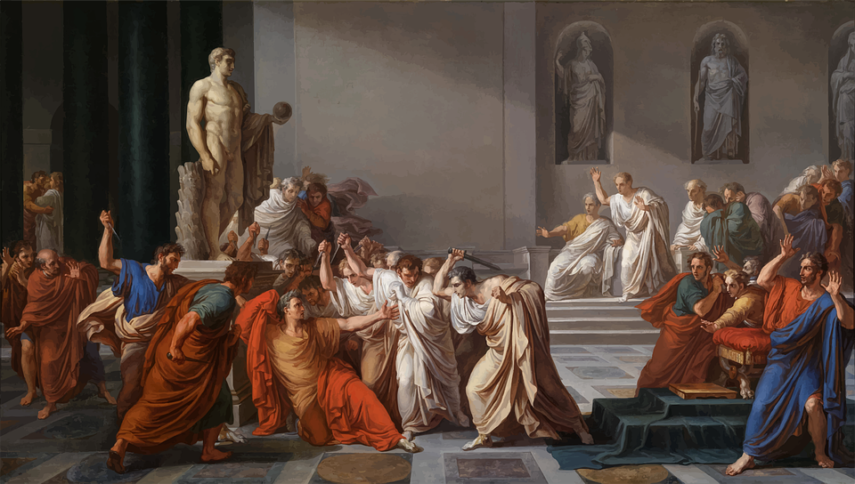
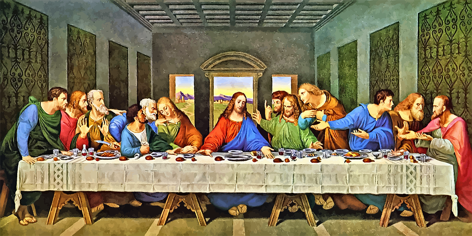
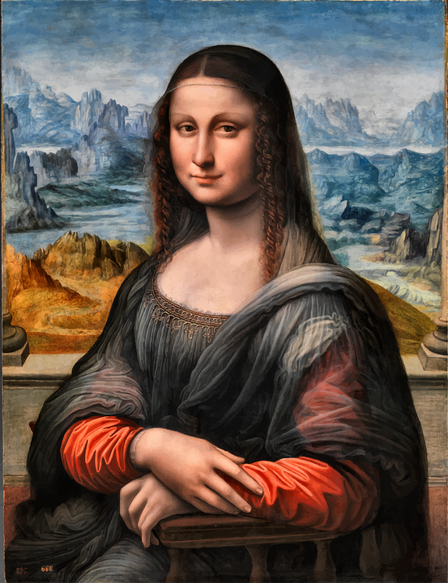

미술관(美術館, 영어: art museum, art gallery) 또는 예술관(藝術館)은 미술작품을 중심으로 한 문화유산이나 현대의 문화적인 유산을 수집·보존·전시하고, 문화에 관한 교육·보급·연구를 행하는 시설이다.
역사적으로 큰 미술 작품들은 교단이나 정치 지도자들에 의해 주문되었으며 절, 교회, 궁전에 전시되었다.
현대 미술과 고전 미술은 너무나 극명한 차이를 보이는 것이 사실이기 때문에 소장품의 성향에 대해서 미리 알고 가야 미술관에서 지루한 시간을 보내다 오는 것을 피할 수 있다. 미술관마다 시기에 따른 작품을 소장하는 경우가 많기 때문. 예를 들면 프랑스의 루브르 박물관과 오르세 미술관, 퐁피두 센터는 전시물에 있어 차이가 크다.
게다가 현대미술이라는 단어를 영어로 하면 뜻이 좀 달라진다. 현대란 말은 보통 두 가지로 번역되는데, 모던(Modern)과 컨템포러리(Contemporary)다. 두 단어는 비슷해보이지만 좀 다른데, 모던 아트는 19세기 말부터 20세기 초까지 존재했던 모더니즘 사조의 예술품을 뜻하며, 1960년대 이후 포스트모더니즘 사조 이후부터 우리가 살고 있는 시대 정도를 컨템포러리 아트로 부르고 있다. 다른 말로는 동시대 미술. 현재도 무수히 창작되고있는 예술가의 산실도 동시대 미술이 포함되는 셈이다. 물론, 현대나 모던, 컨템포러리가 이 전부를 뜻하는 경우도 있다. 한국에는 모더니즘 아트를 별도로 취급하는 미술관이 없기 때문에 국립현대미술관은 컨템포러리 아트를 이름에 붙이고 있음에도 모더니즘 시기까지 포함한다. 사실 한국의 모더니즘 예술작품 수가 적은 것도 사실이다. 그러나 외국의 미술관인 경우에는 이를 엄격하게 나누는 곳도 있으니 주의할 필요가 있다.


